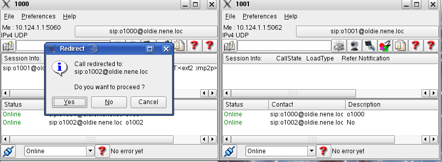
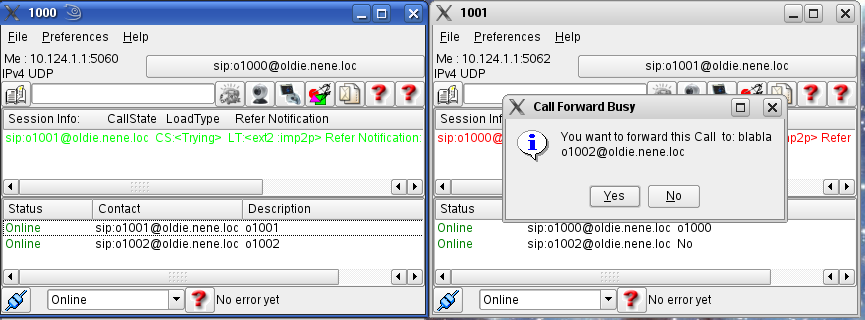
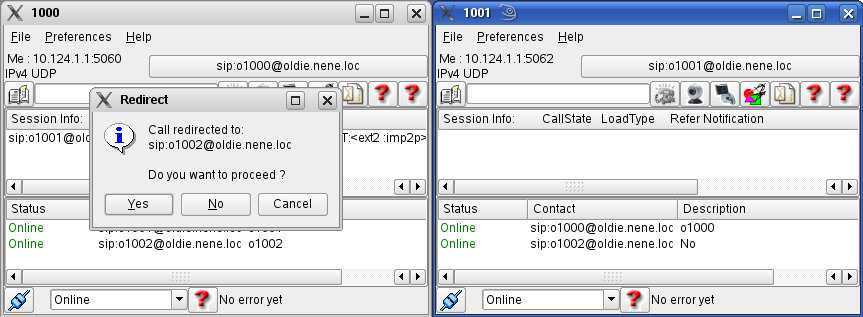
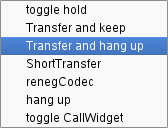
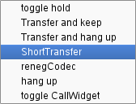
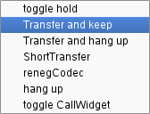
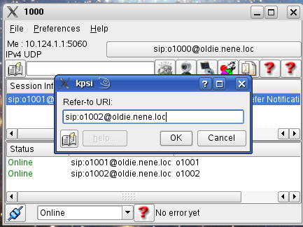

Call Forwarding
unconditional and CFNA (Call Forwarding no Answer)
To use the service, please activate it first! The caller gets a notice, if the callee plans to forward a specific call. She may either solicit or terminate the session.

CFB (Call Forwarding on Busy
This feature allows you to forward an incoming call. How it works:
KPhone informs you about an incoming call, you
accept it (see Chapter "How to" call for more). An infobox pops up and
asks you what to do

If you select "Yes", your would be call partner is asked to
forward the call URI, otherwise it is accepted.

Call Hold only works with an active call. The
service is started, if one of the participants selects the toggle hold tab in the popup of
the active call field.
This feature only works with an active call! The service is started, if one of the participants selects call transfer in the popup of the active call field. This feature comes in three forms:
Call Transfer and hang up
ports a session to a new user. The
“old” session is released afterwards.


Call Transfer and keep
also ports a session to a new user but it allows you to keep the
old one.
.
The user is asked for the new destination immediately.